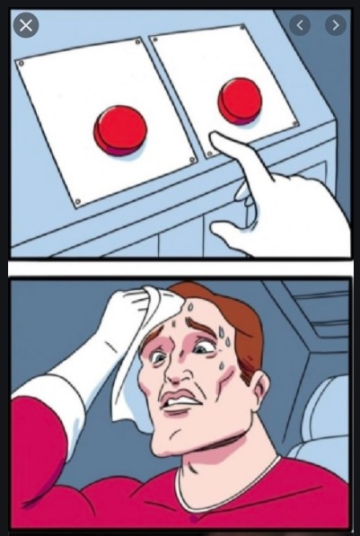
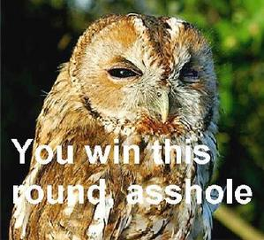
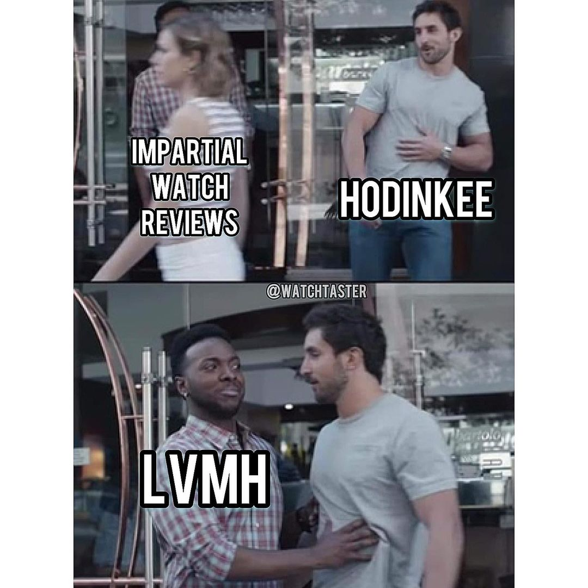
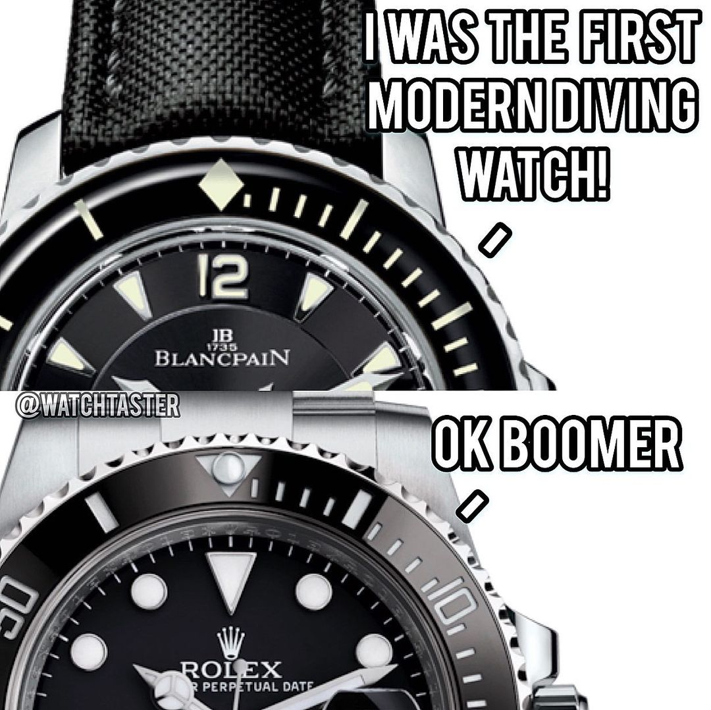
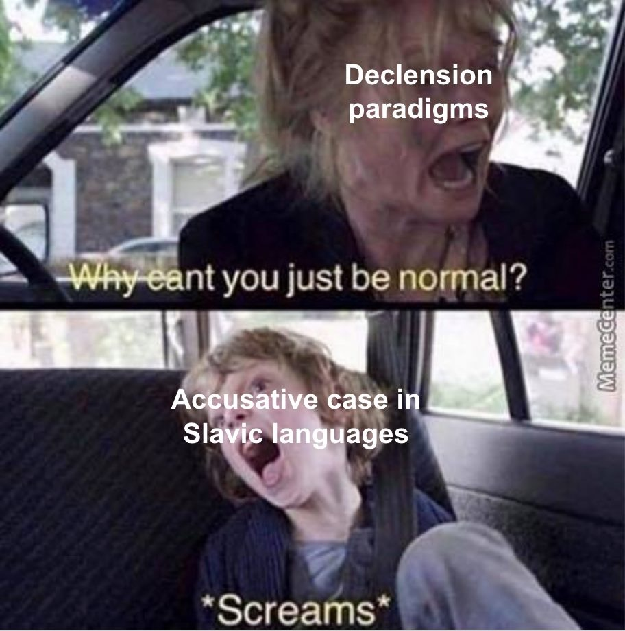
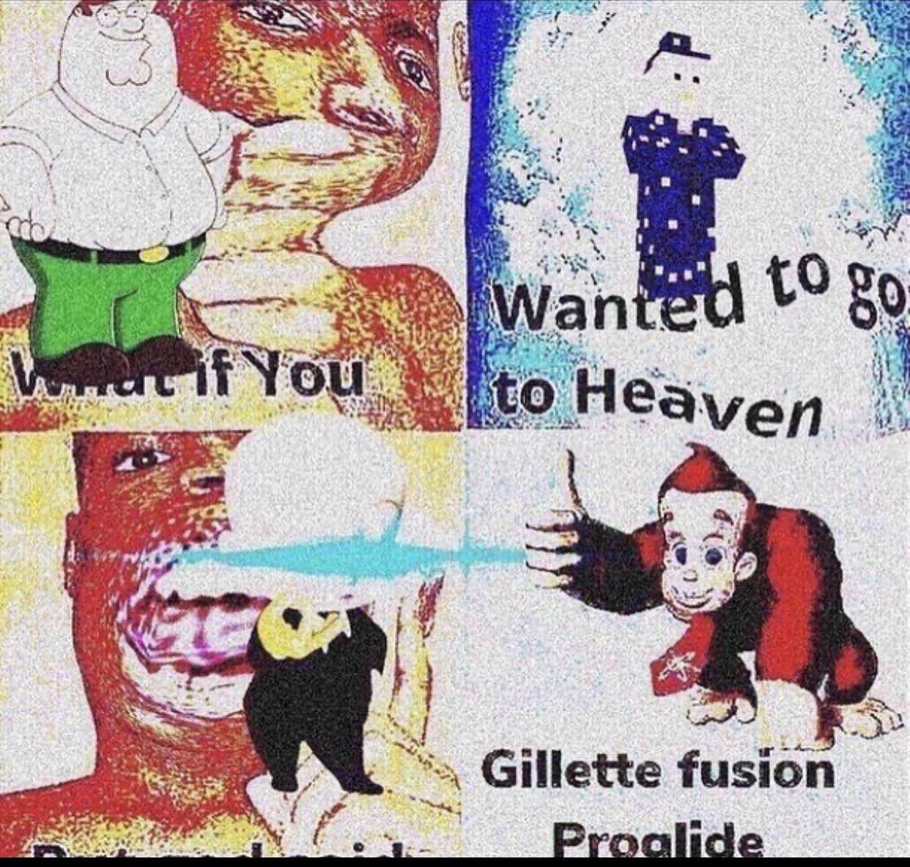

Slides are available at
http://savethevowels.org/talks/meme_linguistics.html
This lecture will discuss memes of all types
There will be some ‘profane’ language
There will be cursed memes
I’m doing my best, but I’ve been doing this since 2007

What are memes?
Are memes language?
Why does that matter?
A unit of cultural information, such as a cultural practice or idea, that is transmitted verbally or by repeated action from one mind to another.
Cultural concepts (e.g. ideas, practices, rituals)
Physical actions (e.g. dances, planking, rickrolling)
Language itself is memetic, by some definitions!
Phrases with codified meaning
“You love to see it”
“Kony 2012”
“We have 69 copies left.” “Nice.”
“F in the chat”

In the modern, internet-focused definition of ‘meme’
… but these same arguments could be made for videos, phrases, etc…
There are many people who’ve talked about this!
There’s not a consensus on exactly what makes Language language
… but there are a number of features which most folks agree on
If memes are language, they should fit these characteristics!
Semanticity
Arbitrariness of form and meaning
Speaker knowledge of grammaticality
Full productivity and creativity
Social transmission
Compositionality
Accomplishes linguistic functions (e.g. assertions, questions, commands, expressives)
The /-z/ suffix in ‘memes’ has a defined meaning
“Penguin” has a defined meaning
“I went to the park” has a defined meaning


The meaning of ⛄ is closely related to its form, it is ‘iconic’
The meaning of /kæt/ is not related to its form
In language, the relationship between form and meaning is arbitrary
Memes are often strongly iconic
Relying on facial expressions
Photos of situations
The meaning of ‘templates’ is based on their image
Meanings are often grounded in specific cultural contexts
Memes can become more abstract and less iconic over time!



Many memes are iconic, but some templates and meme formats can approach arbitrariness!
Very concrete and iconic memes can detach from their forms

Originally posted by the webcomic Ctrl+Alt+Del
A very serious comic about the author and his wife losing a pregnancy
This comic was… strongly criticized
Didn’t fit the tone of the strip
The dramatic element was widely considered to be poorly done
Vigorous parody began
Hiding ‘Loss’ references became a meme of itself

(and it’s not one that’s widely appreciated)
Some require cultural or social knowledge
… and some have abstracted away from iconicity completely
This one’s questionable for memes!
There are ‘conventions’ which are by and large followed
“Mara went to the store with Darnell”
*“Somebody set up us the bomb. All your base are belong to us.”
Memes can be ungrammatical
Meme forms can be used incorrectly


Not cursed or ‘bad’, but not good uses of the form or template
These mirror linguistic grammaticality judgements of speakers
This one checks out!

Language can produce an infinite set of meanings
Sub-elements of language can be recombined to produce new and different language
Language can be used to describe anything (given time!)
Able to be adapted to new scenarios
Templates can be combined or re-used to create new memes
Memes can be combined to produce new memes

New memes can be created for situations
‘You’ve got a meme for everything’
… and the rest of the internet
*
… and new memes can be generated to fill in any gaps
Memes are both creative and productive
Our language is dictated by the language we’re exposed to
Cultural knowledge is included
Our language represents our social groups
Memes are culturally and socially specific
Memes spread within subcultures before reaching ‘mainstream’
We can tell facts about people from their meme choices
Some memes need in-group knowledge to be understood








They are learned from other meme users
They are bundled with and index sociocultural information
Your upbringing and environment play a strong role in determining how you use and understand them
Yup, that’s languagey!
Larger wholes are made up of smaller parts, each contributing part of the meaning
‘Unlockable’ (un+lock+able)
“I’m never gonna give you up.”
The captions themselves carry meaning (duh)
Meme templates carry meaning too!
Other stylistic elements can carry meaning
Changing ONLY the template changes the meaning
Minimal pairs are possible



They’re evaluable in terms of many components, each contributing meaning
These meaning components are productive, and can be re-used elsewhere
We can make simple assertive sentences
We can ask questions
We can issue directives
We can express our feelings
We can change things about the world


Phonology/Phonotactics
Morphology
What are the correspondences between meme form and meaning?
How do memes go from funny pictures to productive chunks of meaning and form?
Semantics
Pragmatics
Sociolinguistics
What does meme use tell us about people’s social life?
How are memes used to index social identity?
Conversation and Discourse Analysis
Translation theory
Can a meme be translated effectively into another language or culture?
Can memes be made into text?
Diachronic Linguistics
How do memes change over time?
Do memes follow the same patterns as language?
Memes are bits of cultural information which are spread from person to person
They share many of the properties often attributed to conventional signed and spoken language
Linguistic tools and methods are useful for their analysis

Thanks to LingUA at UCSD
Thanks to the Linguistically Informed Memery Crew
Thanks to Lolcats, for getting me started